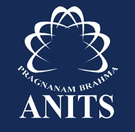

Bachelor of Technology
Anil Neerukonda Institute of Technology and Sciences
2025
Present
Visakhapatnam, Andhra Pradesh, India
Currently Pursuing
Specialization
Computer Science
Duration
4 Years
Current Year
2nd Year
Expected Completion
2028
Currently pursuing B.Tech with a focus on advanced computer science concepts, software engineering,
data structures, algorithms, and modern development practices. Actively engaged in practical projects
and industry-relevant coursework.
Focus Areas
Web Development
Data Science
Cloud Computing
Software Engineering

Diploma in Computer Engineering
Sai Ganapathi Shift Polytechnic
2022
2025
Visakhapatnam, Andhra Pradesh, India
Successfully Completed
Overall Percentage
96.5%
Duration
3 Years
CGPA
9.6 / 10
Grade
Distinction
Completed a comprehensive Diploma in Computer Engineering with exceptional academic performance.
Gained strong foundation in programming, database management, web technologies, networking,
and software development. Completed multiple practical projects and industry-relevant assignments.
Key Achievements
95.6% Overall Excellence
Top 5% in Batch
Multiple Projects
Technical Skills Award

Secondary Education (SSC)
Sri Kanchi Kamakoti Integrated Veda Paatashaala (Gurukulam)
2019
2022
Samalakot, Andhra Pradesh, India
Successfully Completed
Percentage
88.5%
Duration
3 Years
GPA
8.85 / 10
Grade
First Class
Completed secondary education at a distinguished institution combining traditional Vedic education
with modern academics. Developed strong analytical thinking, disciplined study habits, and
foundational knowledge in mathematics, sciences, and languages.
Key Achievements
88.5% Percentage
First Class Distinction
Cultural Excellence
Academic Awards